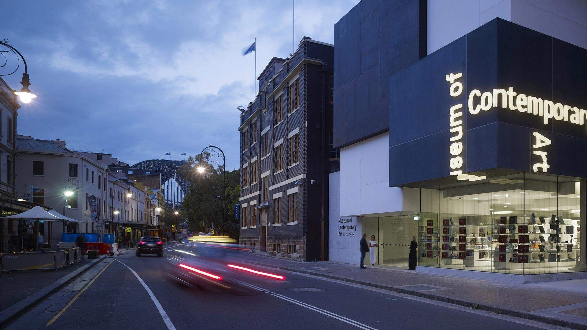

Safety
subtitle of the module
Public Transportation
International students need to know transport information.
Community Environment
Entertainment
Rental Price

First slide label
Some representative placeholder content for the first slide.

Second slide label
Some representative placeholder content for the second slide.

Third slide label
Some representative placeholder content for the third slide.